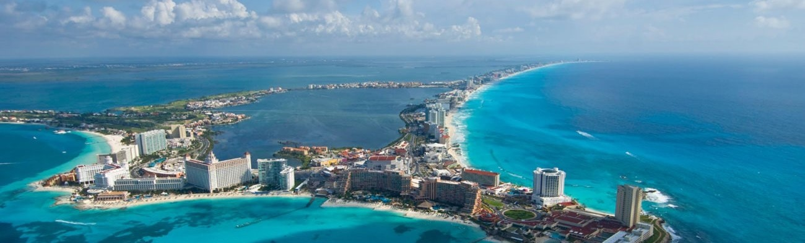
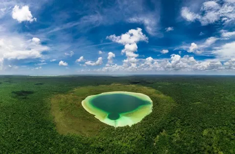
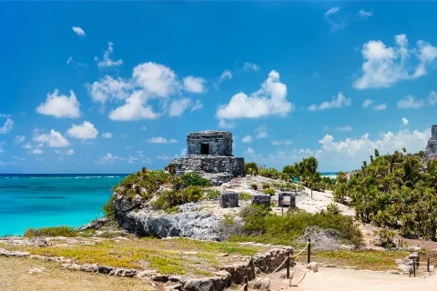

Hotel Caribeño
Un lugar inolvidable
Geografía 
Playas, cenotes, zonas arquológicas y clima
Playas del caribe mexicano Otro de sus atractivos son las playas espectaculares del Caribe mexicano. Algunas ya son reconocidas como las más bonitas del mundo, por sus kilómetros de arena blanca, enmarcada por los colores turquesa de sus aguas. El fondo marino también resguarda verdaderos tesoros por descubrir, como la segunda barrera de coral más grande del mundo, hogar de una gran variedad de especies, paraíso del buceo y el esnórquel. Algunas de ellas son: El Cielo en Cozumel, Playa Mamitas en la Riviera Maya, Playa Paraíso en Tulum y Playa Delfines en Cancún.
Cenotes Los cenotes son otros de los atractivos que resguarda la parte continental del Caribe mexicano. Estos cuerpos de agua mantienen el misticismo que tan apreciado era por los antiguos mayas y aán son fuente del vital líquido de la zona. Algunos de las más conocidos son los de la Ruta de los Cenotes en Puerto Morelos , el de la Laguna de Kaan Luum y Sac Actún en la Riviera Maya.

Zonas arqueológicas También la parte continental del Caribe mexicano destaca por la riqueza histórica de sus zonas arqueológicas son uno de los atractivos más importantes. Desde los vestigios del Rey, San Miguelito y El Meco en Cancún, hasta los de Cobá y Tulum en la Riviera Maya, son puntos de gran interés para los turistas nacionales e internacionales por el gran legado maya que atesoran.

Clima El clima en el Caribe Mexicano durante el año es muy agradable, entre 26 y 30 grados centígrados. Solo en la temporada de calor, principalmente en el mes de agosto, puede llegar hasta los 32 grados centiacutegrados. Durante el "invierno" caribeño, entre los meses de diciembre y enero, es muy raro que disminuya de los 20 grados. La época de lluvias y temporales es de junio a finales de octubre.
¿Tienes preguntas o sugerencias? Envíanos un correo, sólo da click aquí.